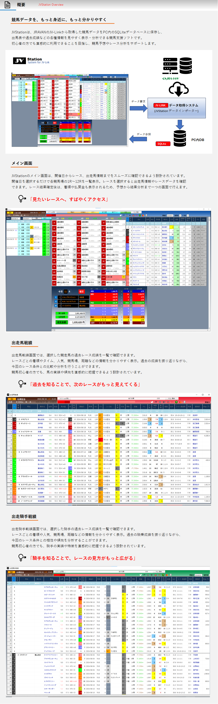
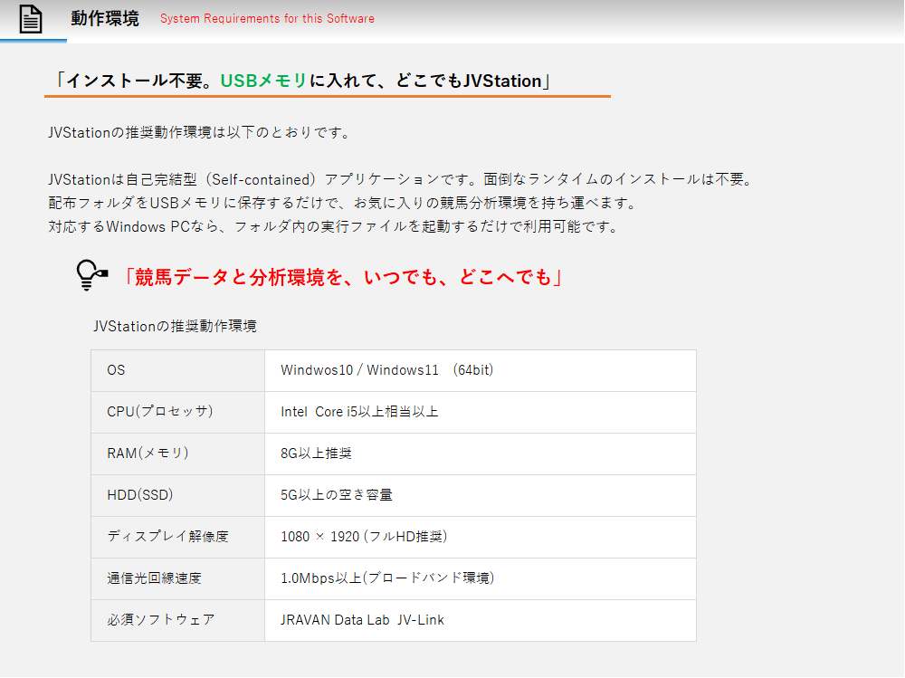
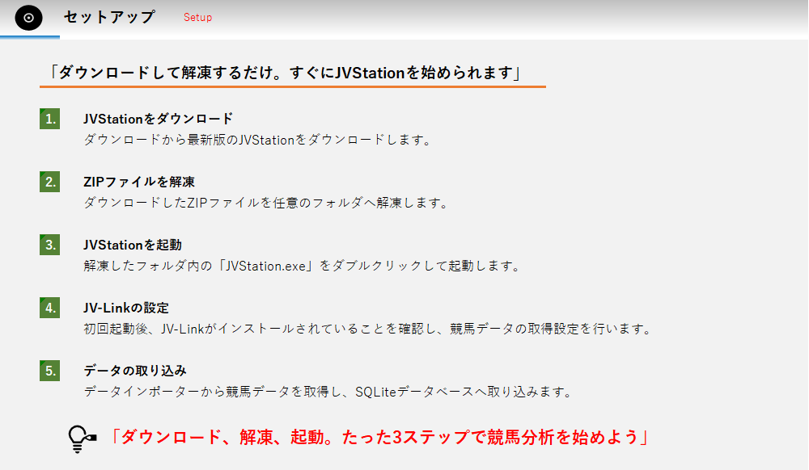
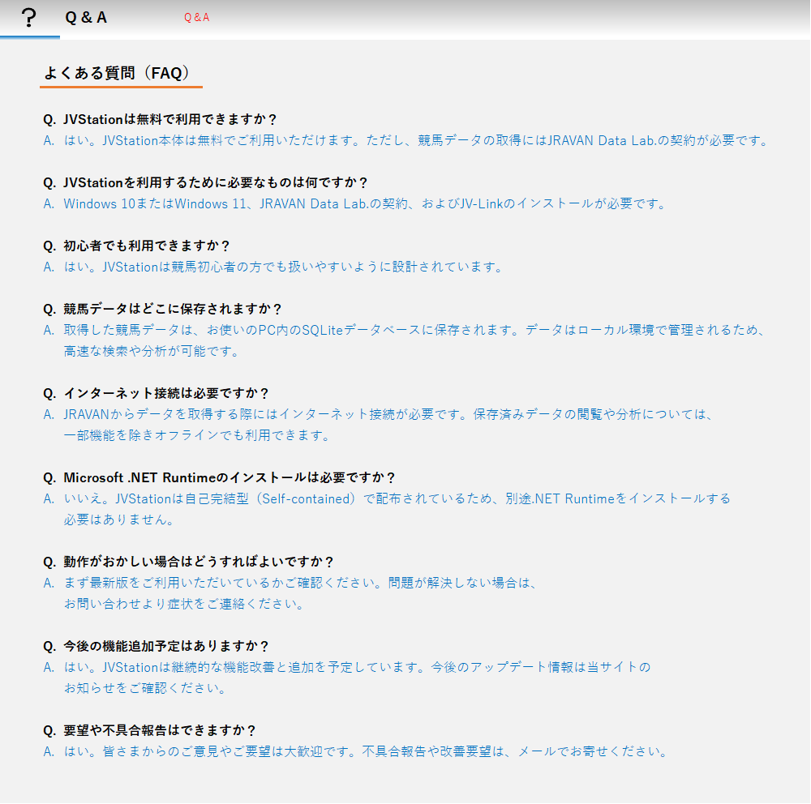
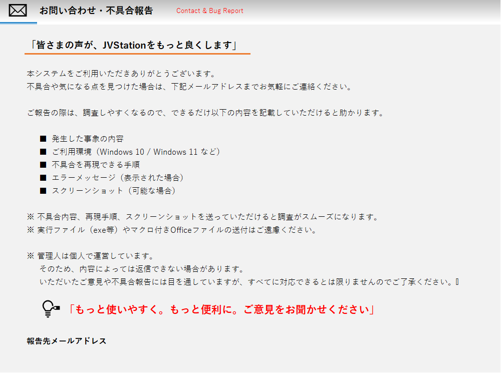

長い準備期間を経て、このたび「JVStation Ver1.0」をリリースいたしました。 JVStationは、JRAVANデータを活用し、競馬をこれから始める方でも楽しみながら予想できる環境を目指して開発しました。 初めての公開となるため改善点もあるかと思いますが、皆さまからのご意見を参考にしながら、より使いやすいシステムへ成長させていきたいと考えています。 ぜひ右側のダウンロードボタンからお試しください。

JVStationは、JRAVANのJV-Linkから取得した競馬データをPC内のSQLiteデータベースに保存し、 出馬表や過去成績などの各種情報を見やすく表示・分析できる競馬支援ソフトです。 初心者の方でも直感的に利用できることを目指し、競馬予想やレース分析をサポートします。
JVStationのメイン画面は、開催日からレース、出走馬情報までをスムーズに確認できるよう設計されています。 開催日を選択するだけで各競馬場の1R～12Rを一覧表示。レースを選択すると出走馬情報やレースデータを確認 できます。レース結果確定後は、着順や払戻金も表示されるため、予想から結果分析まで一つの画面で行えます。
出走馬戦績画面では、選択した競走馬の過去レース成績を一覧で確認できます。 レースごとの着順やタイム、人気、競馬場、距離などの情報を分かりやすく表示。過去の成績を振り返りながら、 今回のレース条件との比較や分析を行うことができます。 競馬初心者の方でも、馬の実績や傾向を直感的に把握できるよう設計されています。 「過去を知ることで、次のレースがもっと見えてくる」
出走騎手戦績画面では、選択した騎手の過去レース成績を一覧で確認できます。 レースごとの着順や人気、競馬場、距離などの情報を分かりやすく表示。過去の騎乗成績を振り返りながら、 今回のレース条件との相性や傾向を分析することができます。 競馬初心者の方でも、騎手の実績や特徴を直感的に把握できるよう設計されています。 「騎手を知ることで、レースの見方がもっと広がる」



A. はい。JVStation本体は無料でご利用いただけます。ただし、競馬データの取得にはJRAVAN Data Lab.の契約が必要です。
A. Windows 10またはWindows 11、JRAVAN Data Lab.の契約、およびJV-Linkのインストールが必要です。
A. はい。JVStationは競馬初心者の方でも扱いやすいように設計されています。
A. 取得した競馬データは、お使いのPC内のSQLiteデータベースに保存されます。データはローカル環境で管理されるため、 高速な検索や分析が可能です。
A. JRAVANからデータを取得する際にはインターネット接続が必要です。保存済みデータの閲覧や分析については、 一部機能を除きオフラインでも利用できます。
A. いいえ。JVStationは自己完結型（Self-contained）で配布されているため、別途.NET Runtimeをインストールする 必要はありません。
A. まず最新版をご利用いただいているかご確認ください。問題が解決しない場合は、 お問い合わせより症状をご連絡ください。
A. はい。JVStationは継続的な機能改善と追加を予定しています。今後のアップデート情報は当サイトの はい。JVStationは継続的な機能改善と追加を予定しています。今後のアップデート情報は当サイトの お知らせをご確認ください。
A. はい。皆さまからのご意見やご要望は大歓迎です。不具合報告や改善要望は、メールでお寄せください。 はい。皆さまからのご意見やご要望は大歓迎です。不具合報告や改善要望は、メールでお寄せください。
